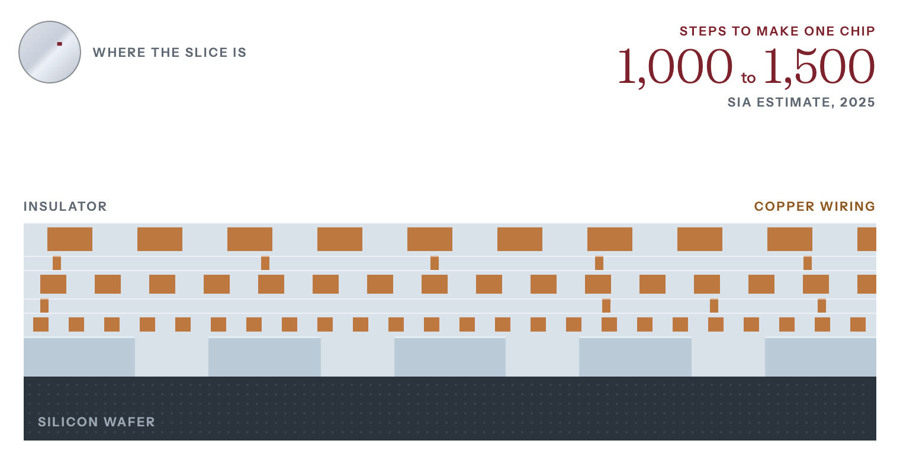

Chapter 06Stage 6 of 14High concentrationModerately hard to substitute
Chapter 6: Deposition and Etch
Deposition and etch tools build a chip layer by layer. China-based toolmakers' share of deposition tools rose from 2 to 7 percent between 2019 and 2024, by CSET's count.
Sharma, Yashvardhan. “Deposition and Etch.” Chip Supply Chain: How AI Chips Are Made. Updated 28 October 2026. https://chipsupplychain.org/deposition-and-etch/
A plasma etch chamber cut in half. The vessel is 500 mm across inside and holds one 300 mm wafer clamped to a holder, called a chuck, at the bottom. The violet haze above the wafer is the plasma. The gap it fills is drawn about twice its real height of 30 to 40 mm. The rest is to scale.
In plain terms
and build the itself, one layer at a time. Deposition lays down a thin film, sometimes only a few atoms thick. prints a pattern on it. Etch then eats away everything the pattern does not protect, and the next film goes down on top. Making one chip takes 1,000 to 1,500 steps, the Semiconductor Industry Association estimated in 20251. Some of the holes the etch cuts in memory chips are more than 50 times deeper than they are wide, like a finger-wide shaft about a meter deep2. The film has to coat them right to the bottom. The etch has to eat one material and leave the one beside it untouched. Applied Materials and Lam Research in the United States, Tokyo Electron in Japan and ASM International in the Netherlands make most of these machines. Chinese toolmakers have gained share in both kinds of tool since 2019.
In short
American companies held 60.3 percent of the world market for tools in 2025, Japanese companies 14.0 percent and China-based companies 9.8 percent, by CSET's count from TechInsights data3. In and cleaning tools that year, American companies held 52.6 percent, Japanese companies 32.6 percent and China-based companies 10.1 percent4.
tools coat a hole's walls and floor as evenly as its rim5. China-based companies held only 2.6 percent of the world market for them in 2025, by CSET's count from TechInsights data6. The December 2024 US export rule targets tools for atomic layer deposition of the metals molybdenum and ruthenium, and for coating holes more than 200 times deeper than they are wide7.
Applied Materials and Lam Research are the two largest and suppliers. Applied Materials' revenue across all its businesses was $28.368 billion in fiscal 20258. Lam Research's was $23.233 billion in fiscal 2026, the year to June 20269.
- Who leads
- USApplied Materials 82.4% of physical vapor deposition tools in 2025, by CSET's count from TechInsights data11
- USLam Research 51.2% of conductor etch tools in 202512
- JPTokyo Electron 55.9% of dielectric etch tools in 202513
- NLASM International 54.5% of atomic layer deposition tools in 20256
- CNNaura 14.7% of physical vapor deposition tools in 202511
- Where it is made
- USUnited States Applied Materials, Lam Research
- JPJapan Tokyo Electron, Kokusai Electric
- NLNetherlands ASM International, atomic layer deposition
- KRSouth Korea Large equipment buyer
- CNChina Naura, AMEC and Piotech, in the largest equipment market ($49.3B in 2025)
How it works
One round of deposition and etch

- The wafer. A slice through one spot on a wafer, magnified until its layers show.
- Deposit. A thin film is laid over the whole wafer.
- Coat. A light-sensitive coating, the resist, is spun on top.
- Expose. Light shines through a stencil and changes the resist wherever it lands.
- Develop. A wash removes the resist the light reached, leaving the stencil’s pattern.
- Etch. A plasma cuts straight down through the film wherever the resist is gone.
- Strip. The leftover resist is removed. The pattern now sits in the film.
- Repeat. Insulator fills the gaps and the next layer goes on. Making one chip takes 1,000 to 1,500 steps, the Semiconductor Industry Association estimated in 2025.
Most etch steps, and many deposition steps, happen in a vacuum chamber that holds one at a time. A pump empties the chamber of air, and a measured flow of gas comes in. A radio-frequency field, an electric field that reverses millions of times a second, turns the gas into a . The field splits the gas into charged ions and into neutral fragments called radicals, which are more reactive than whole molecules16.
In most deposition steps, the gas carries the material the film will be made of. The molecules, or the radicals a plasma splits from them, land on the wafer and stick. The film builds up a few atoms at a time.
To coat the floor of a deep hole as thickly as its rim, the machine can work in cycles, a method called . First one gas settles in a single layer on every surface, and the pump removes the rest. Then a second gas reacts with that layer and nothing else, and the pump empties the chamber again. Each cycle adds a fraction of a layer of atoms wherever the gas reached, so the film grows as evenly on a hole's walls and floor as on its rim5.
Not every step runs one wafer at a time. Batch furnaces such as Tokyo Electron's TELINDY PLUS heat as many as 125 wafers at once, usually without plasma17. They grow oxide films and run low-pressure and some atomic layer deposition17.
For etch, the gas attacks one material and leaves the one beside it. Wherever the covers the wafer, it shields the film beneath. Wherever it does not, the radicals react with the surface and turn it into a gas, which the pump carries away. A second field pulls the ions straight down at the wafer, so the etch cuts vertically and a narrow hole keeps its width as it deepens16. When the etch reaches the material underneath, which the gas was chosen not to touch, it slows almost to a stop, and the tool ends the step.
Variants and trade-offs
Deposition families
The market sizes and leading shares below are 2025 figures from Georgetown University's Center for Security and Emerging Technology (CSET), based on data from the research firm TechInsights. CSET puts the deposition tool market at $26.2 billion3. It puts the dry etch market at $21.9 billion10.
- (PVD), which knocks atoms off a solid target and lands them on the wafer, was a $4.9 billion market in 202511. Applied Materials held 82.4 percent of it and China's Naura 14.7 percent11.
- Chemical vapor deposition (CVD), which reacts gases at the wafer surface to grow a film, was an $11.2 billion market in 2025, led by Applied Materials at 47 percent18. The plasma-enhanced version (PECVD) runs cooler and made up most of it, $7.5 billion19.
- Atomic layer deposition (ALD) lays down less than one atomic layer at a time. Each step stops once every surface is covered, so it coats vertical walls as evenly as horizontal floors. The US (BIS), which writes the export rules, says that even coating makes it important for building 3D structures, such as 3D , , and the and in 5. ASM International leads it with 54.5 percent of a $4.1 billion market in 20256.
- grows layers that line up with the crystal beneath them, using high-temperature CVD tools20. Electroplating deposits the copper used for wiring across the wafer21.
Etch families
- Conductor etch, which cuts gates, metals and silicon, was a $12.2 billion market in 2025, led by Lam at 51.2 percent, by CSET's count from TechInsights data12.
- , which cuts the insulating oxides and nitrides between the conductors, was an $8.7 billion market in 2025, led by Tokyo Electron at 55.9 percent, by CSET's count from TechInsights data13.
- High-aspect-ratio etch cuts the deep, narrow channels that let 3D NAND stack layers of memory cells22. A channel's aspect ratio is its depth divided by its width. Lam says slight departures from a channel's intended shape can hurt 22. Lam runs this etch well below 0 degrees Celsius22. It says its Cryo 3.0 technology can etch channels up to 10 deep whose width varies from top to bottom by less than 0.1 percent of their depth22.
AI hardware needs sideways cuts, deeper holes and a second stack of metal wiring on the back of the wafer.
- Gate-all-around need highly selective isotropic etch, which cuts sideways23. BIS controls isotropic dry etch tools that remove silicon- at least 100 times faster than silicon, a selectivity of 100:1 or more24.
- (high-bandwidth memory) needs holes etched straight through the silicon, called (TSVs), so can be stacked and wired25. BIS controls the tools that etch these holes at aspect ratios (depth to width) of 10:1 or more and at rates above 7 microns a minute14. The control covers only tools that also keep the holes' depth even to within 2 percent across the wafer14.
- moves the wires that carry power to the back of the wafer26. In July 2024 Applied Materials said it expected backside power to add $1 billion to the market for its wiring tools, for every 100,000 of new capacity27.
Who makes it
The industry association SEMI put world sales of at $135.1 billion in 2025, up 15 percent from $117.1 billion29. Sales of wafer processing equipment, the category that includes deposition and etch tools, rose 12 percent29.
No one firm dominates deposition and etch the way ASML dominates . In dry etch, CSET's count for 2025 from TechInsights data puts Lam Research at 41.1 percent, Tokyo Electron at 23.4 percent and Applied Materials at 17.4 percent10. Tokyo Electron's own results presentation, citing Gartner, gives it 23 percent of dry etch and 27 percent of deposition systems in 2025, a category that includes furnace, ALD and low-pressure CVD tools28. Within that category, Tokyo Electron's share of ALD was 15 percent28. The same presentation, again citing Gartner, gives it 91 percent of coater/developers in 202528. These machines coat wafers with photoresist and develop the pattern after lithography.
ASM International, the atomic layer deposition specialist, reached a record EUR 3.2 billion of revenue in 2025 as customers built 2 nm gate-all-around capacity30. Molybdenum ALD, a new use of its tools that deposits the metal molybdenum, entered that year30.
Chipmaking equipment sales rose to $135.1 billion in 2025, from $117.1 billion
What the world spent on chipmaking equipment
| 2024 | $117.1B |
|---|---|
| 2025 | $135.1B |
Sharma, Yashvardhan. “Figure 06.3: What the world spent on chipmaking equipment.” Chip Supply Chain: How AI Chips Are Made. Updated 28 October 2026. https://chipsupplychain.org/deposition-and-etch/#fig-deposition-and-etch-equipment-billings
China and the controls
China is the tool vendors' largest market, buying $49.3 billion of equipment in 2025, half a percent less than in 202429. Taiwan's spending rose 90 percent to $31.5 billion29. South Korea's rose 26 percent to $25.8 billion29. China still takes a large share of every major vendor's sales.
- Tokyo Electron: 34.1 percent of sales in the year to March 2026, down from 41.7 percent31. It was 30.4 percent in the quarter to June 202632.
- Lam Research: about 34 percent of revenue in the year to June 2026, the same as a year earlier33.
- Applied Materials: 28 percent in the third fiscal quarter of 2026, down from 35 percent a year earlier34.
- ASM International: more than 30 percent of 2025 revenue30.
Between 2019 and 2024, by CSET's analysis of TechInsights data, China-based suppliers went from 2 to 7 percent of deposition and from under 3 to almost 9 percent of etch and clean35. In ALD they gained no share and held less than 1 percent in 202435.
CSET's newer analysis, of data that TechInsights published in July 2026, puts China-based suppliers at 9.8 percent of deposition in 20253. They held 10.1 percent of etch and clean that year4. In dry etch alone their share was 12.4 percent10. In ALD they held 2.6 percent in 2025, most of it from Piotech6.
The Chinese toolmaker AMEC alone held 12.4 percent of dielectric etch in 2025, by CSET's count from TechInsights data13. Its revenue was RMB 12.385 billion that year, up about 36.62 percent36. It spent RMB 3.744 billion on research and development, 30.2 percent of sales36.
The United States tightened its at least five times between 2022 and 2025. The rules describe each deposition or etch tool by the process it is designed to run24.
- October 2022. BIS issued a rule on 7 October that required a license to export advanced chipmaking equipment to China37. The rule listed that equipment under a new entry, 37. It also required to get a license to ship, transfer or service items used at advanced fabs in China38. It defined these as fabs that make logic chips with non-planar transistors or at 16/14 nm or below, NAND memory with 128 or more layers, or DRAM at 18 nm or below38. The rule extended US license rules to more foreign-made items bound for 28 Chinese entities on the 39. That list names the foreign firms that exporters need a license to supply.
- October 2023. A rule issued in October 2023 and effective 17 November rewrote the US control list's entries for chipmaking equipment40. It added tools for four processes5. The first is dry etch, both sideways (isotropic) and vertical (anisotropic), under ECCN 3B001.c.123. The second is spatial ALD (3B001.d.9), whose design keeps stray particles down to the level advanced chips need5. The third is low-fluorine tungsten ALD and CVD (3B001.d.10), which fills deep, narrow gaps in advanced chips with tungsten while keeping resistance low5. The fourth is carbon hard PECVD (3B001.d.5), which lays down the etch-resistant carbon films that smaller features need5.
- December 2024. BIS controlled 24 more types of equipment and three types of software, and added 140 entities to the Entity List15. The new equipment entries include TSV etch, and deposition into features with aspect ratios above 200:141. BIS also wrote a that reaches some tools built outside the United States15. The rule largely exempts foreign-made tools exported by firms located in Japan, the Netherlands and the 31 other countries it lists, whose governments can control these tools themselves42. Japan, one of those countries, had added advanced chipmaking equipment to its own control list on 23 July 202343.
- September 2025. BIS removed the Chinese units of Samsung and SK hynix, and Intel Semiconductor (Dalian), from the program, effective 31 December 202544. From that date, US tools bound for them need a license44. BIS estimated that the change would add 1,000 license applications a year44.
- September 2025. The extended Entity List restrictions to any company at least 50 percent owned by a listed entity45. BIS then suspended it until 9 November 202646.
BIS enforces the rules on toolmakers too. In February 2026 BIS said Applied Materials had shipped , tools that fire atoms into silicon, to a company in China on the Entity List in 2021 and 2022 without the license the Entity List requires47. The tools, worth about $126 million, went to China through Applied's Korean unit47. BIS set the penalty at about $252 million, twice their value and the most the law allows47. In fiscal 2026 Applied Materials took a $253 million charge to settle an export controls compliance matter with BIS34.
Of the tools in the chart below, China-based suppliers have their largest share in dry stripping, which clears leftover photoresist off the wafer48. Dry stripping was a $314.6 million market in 2025, by CSET's count from TechInsights data48. Japan's Kokusai held 35.7 percent of it, Mattson Technology 22.6 percent and Naura 8.3 percent48. Mattson is based in the United States, but Beijing E-Town bought it in 201635. CSET counts Mattson's share as China's35.
The chokepoint
Deposition and etch tools are a , but a weaker one than lithography, because chipmakers can buy each main tool from more than one maker. In dry etch, Lam Research held 41.1 percent in 2025, Tokyo Electron 23.4 percent and Applied Materials 17.4 percent, by CSET's count10. Atomic layer deposition has at least five makers6.
Flashcards
Recall each answer, then turn the card.
What do deposition and etch do?
Deposition lays down a thin film, and etch cuts away the parts the printed pattern leaves exposed.
Making one chip takes 1,000 to 1,500 steps, the Semiconductor Industry Association estimated in 2025. Reread: How it works
Which four companies make most deposition and etch tools?
Applied Materials, Lam Research, Tokyo Electron and ASM International.
Applied Materials and Lam Research are American, Tokyo Electron is Japanese and ASM International is Dutch. No one firm dominates the way ASML dominates lithography. Reread: Who makes it
What share of the deposition and dry etch tool markets did Chinese toolmakers hold in 2025?
9.8 percent of deposition and 12.4 percent of dry etch, by CSET's count.
Their share of deposition tools rose from 2 percent in 2019 to 7 percent in 2024. Reread: China and the controls
What share of atomic layer deposition tools did Chinese toolmakers hold in 2025?
2.6 percent, most of it from Piotech.
Atomic layer deposition coats a hole's walls and floor as evenly as its rim. BIS, which writes the US export rules, says that makes it important for 3D structures such as gate-all-around transistors. Reread: China and the controls
Four things to remember
- Deposition lays down thin films and etch cuts them into patterns. Making one chip takes 1,000 to 1,500 steps, by a 2025 industry estimate.
- Four American, Japanese and Dutch firms make most of these tools, and none dominates.
- Chinese makers held 12.4 percent of dry etch and 9.8 percent of deposition in 2025, on CSET's count.
- Chinese makers held 2.6 percent of atomic layer deposition in 2025, most of it from Piotech.
Sources (48)
- ATestimony of David Isaacs, Semiconductor Industry Association, hearing on “Trade in Critical Supply Chains”
- AForeign-Produced Direct Product Rule Additions, and Refinements to Controls for Advanced Computing and Semiconductor Manufacturing Items
- ASupply Chain Explorer: Advanced Chips
- ASupply Chain Explorer: Advanced Chips
- AExport Controls on Semiconductor Manufacturing Items
- ASupply Chain Explorer: Advanced Chips
- AForeign-Produced Direct Product Rule Additions, and Refinements to Controls for Advanced Computing and Semiconductor Manufacturing Items
- ARevenue from Contract with Customer, Excluding Assessed Tax (us-gaap:RevenueFromContractWithCustomerExcludingAssessedTax) reported by APPLIED MATERIALS INC /DE, XBRL company concept data
- ALAM RESEARCH CORP, Form 8-K current report for the period ended 2026-07-29 (8-K)
- ASupply Chain Explorer: Advanced Chips
- ASupply Chain Explorer: Advanced Chips
- ASupply Chain Explorer: Advanced Chips
- ASupply Chain Explorer: Advanced Chips
- AForeign-Produced Direct Product Rule Additions, and Refinements to Controls for Advanced Computing and Semiconductor Manufacturing Items
- ACommerce Strengthens Export Controls to Restrict China's Capability to Produce Advanced Semiconductors for Military Applications
- AEtch Essentials: The Building Blocks of AI Era Microchips (Semi 101)
- ATELINDY™ Series
- ASupply Chain Explorer: Advanced Chips
- ASupply Chain Explorer: Advanced Chips
- ASupply Chain Explorer: Advanced Chips
- AThe Semiconductor Supply Chain - Issue Brief
- ALam Research Introduces Lam Cryo™ 3.0 Cryogenic Etch Technology to Accelerate Scaling of 3D NAND for the AI Era
- AExport Controls on Semiconductor Manufacturing Items
- AExport Controls on Semiconductor Manufacturing Items
- AForeign-Produced Direct Product Rule Additions, and Refinements to Controls for Advanced Computing and Semiconductor Manufacturing Items
- APowerVia Test Shows Industry-Leading Performance
- AApplied Materials Unveils Chip Wiring Innovations for More Energy-Efficient Computing
- AFY2026 (April 2025-March 2026) Financial Announcement, transcript
- ASEMI Reports Global Semiconductor Equipment Billings Reached $135 Billion in 2025, Up 15% Year-on-Year
- AASM reports Q4 and full-year 2025 results
- AFY2026 (April 2025-March 2026) Financial Announcement, transcript
- AQ1 FY2027 (April-June 2026) Financial Announcement, transcript
- ALAM RESEARCH CORP, Form 10-K annual report for the period ended 2026-06-28 (10-K)
- AApplied Materials Announces Third Quarter 2026 Results
- AInside Beijing’s Chipmaking Offensive
- AAMEC holds its 2025 annual results briefing (中微公司成功举办2025年度业绩说明会)
- AImplementation of Additional Export Controls: Certain Advanced Computing and Semiconductor Manufacturing Items; Supercomputer and Semiconductor End Use; Entity List Modification
- AImplementation of Additional Export Controls: Certain Advanced Computing and Semiconductor Manufacturing Items; Supercomputer and Semiconductor End Use; Entity List Modification
- AImplementation of Additional Export Controls: Certain Advanced Computing and Semiconductor Manufacturing Items; Supercomputer and Semiconductor End Use; Entity List Modification
- AExport Controls on Semiconductor Manufacturing Items
- AForeign-Produced Direct Product Rule Additions, and Refinements to Controls for Advanced Computing and Semiconductor Manufacturing Items
- AForeign-Produced Direct Product Rule Additions, and Refinements to Controls for Advanced Computing and Semiconductor Manufacturing Items
- AForeign-Produced Direct Product Rule Additions, and Refinements to Controls for Advanced Computing and Semiconductor Manufacturing Items
- ARevocation of Validated End-User Authorizations in the People's Republic of China
- AExpansion of End-User Controls To Cover Affiliates of Certain Listed Entities
- AOne Year Suspension of Expansion of End-User Controls for Affiliates of Certain Listed Entities
- AApplied Materials to Pay $252 Million Penalty to BIS for Illegally Exporting Semiconductor Manufacturing Equipment
- ASupply Chain Explorer: Advanced Chips